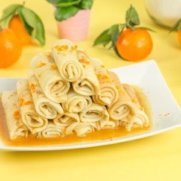

Les crêpes Suzette

Aujourd’hui je vous retrouve avec une deuxième recette de crêpes: la recette des crêpes Suzette! Comme vous pouvez le voir j’ai choisi de monter mes crêpes sous la forme d’une pyramide pour varier un peu côté présentation (vous me direz ce que vous en pensez)!
Les crêpes Suzette sont devenues de loin mes crêpes favorites. Le goût du caramel mélangé aux agrumes est absolument délicieux et c’est vraiment trop trop gourmand!! Par le passé j’ai souvent boudé les crêpes Suzette pensant que je n’aimerais pas (sans avoir de raisons vraiment valables (l’adolescence sûrement)…) et depuis je rattrape clairement le temps perdu :-). D’ailleurs ce n’est pas parce que c’est la chandeleur qu’il faut se contenter d’en préparer à cette période car on est bien d’accord, la recette est valable toute l’année!!
A l’origine de ce dessert français se cache un chef (français lui aussi) : Auguste Escoffier. Il a imaginé une crêpe au « beurre Suzette ». Vous l’aurez compris en lisant la recette qu’il s’agit d’une sauce composée de sucre caramélisé, de beurre et de jus de mandarines (ou d’oranges), de zeste de mandarines et de curaçao (généralement remplacé par du grand marnier dans la plupart des recettes…).
La partie la moins évidente de la recette qui pourrait en rebuter certains c’est de devoir faire le caramel de départ. Il faut savoir que si vous prenez une poêle assez large (par rapport à la quantité de sucre), que vous ne remuez pas (juste des petits à coups en faisant tourner la poêle sont permis pour pouvoir répartir le sucre correctement) vous obtiendrez sans aucun problème votre caramel qui vous permettra de poursuivre la recette aisément! Bref vous n’avez plus aucune excuse pour ne pas vous lancer dans cette recette!
J’ai choisi de présenter mes crêpes Suzette sous la forme d’une pyramide pour rappeler un peu les cigares roulés aux amandes mais évidemment libre à vous de servir ces crêpes d’une façon plus traditionnelle.
Je vous laisse à présent découvrir la recette et si vous la tentez n’hésite pas à me faire un petit retour et moi je vous dis à très vite 🙂
Ingrédients
- Mandarines - 4
- Beurre mou - 110g
- Sucre - 100g
- Grand Marnier - 2càs
Instructions
- Presser le jus des mandarines et réserver
- Couper le beurre en morceaux et réserver
- Faire un caramel à sec : verser le sucre dans une poêle sans remuer à feu moyen et faire fondre le sucre en caramel. Vous pouvez tourner la poêle de temps à autre pour bien répartir le sucre mais ne remuer surtout pas!!
- Une fois le caramel obtenu (et toujours sur feu moyen), ajouter le jus des mandarines et laisser réduire jusqu'à obtention d'un caramel blond (à partir de là on peut commencer à remuer)
- Ajouter les morceaux de beurre et le faire fondre en mélangeant
- Ajouter le grand marnier
- Facultatif: faire flamber la préparation (c'est comme vous voulez mais dans la vraie recette des crêpes Suzette on ne fait pas flamber la préparation )
- Rabattre un côté de la crêpe et son côté opposé (voir la vidéo)
- Prendre un côté qui n'est pas rabattu et l'enrouler jusqu'à avoir roulé toute la crêpe
- Placer votre crêpe roulée dans un plat. Si vous voulez faire la même pyramide que moi il vous faudra 15 crêpes et donc faire une base de 5 crêpes roulées
- Sur la base des 5 crêpes roulées arroser de sauce
- Placer 4 crêpes roulées par dessus
- Arroser de sauce
- Puis déposer 3 crêpes, arroser de sauce puis 2 etc... et terminer avec la crêpe restante pour former la pyramide
- Il ne vous reste plus qu'à râper le zeste d'une (ou deux) mandarine(s) sur vos crêpes et à les déguster sans plus attendre!
- Bonne dégustation!!
Les tips de la communauté
Recette classique et appréciée pour les crêpes Suzette. La sauce beurre sucre peut être préparée à l'avance, se conserve 3-4 jours et se réchauffe facilement avant l'usage.
Astuces
- La sauce peut être conservée 3-4 jours au réfrigérateur
- Réchauffer la sauce au moment de l'utilisation car elle durcit en refroidissant